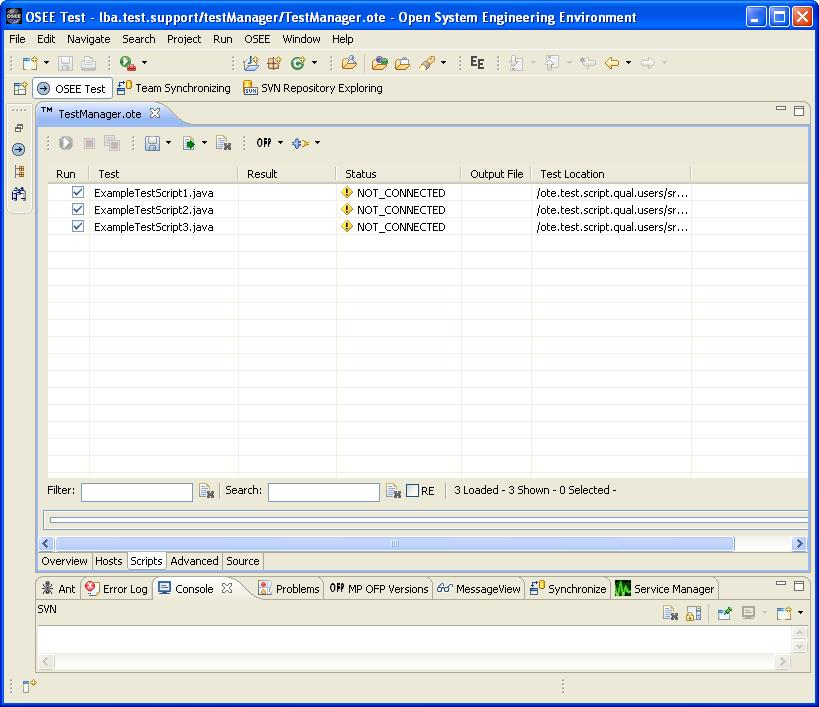

The Scripts page of Test Manager is the page that is the main controller of running test scripts. Below is a screenshot of the Script page with no scripts in it. There is a box near the bottom that has information related to the running of the scripts. There are also widgets along the top of the page that allow for saving and loading of script run lists, clearing out of scripts highlighted, code to run against selection, and a test server connection widget. The running and aborting widgets are there as well, though they are grayed out since the user is not connected to a test server yet.
Below, the user has put some test scripts in the Script page. The check box to the left is for determining if the script will be run when the play button (which is still grayed out). The names of the test scripts are in the Test column. The Status column shows the current status of the test script, and they all show NOT_CONNECTED when the Test Manager is not connected to a test server. The location of the test script is also shown.

In this shot, the Test Manager has now connected to a test server. The status of the scripts is shown as READY, and the test server connection widget is now shown as a lightning bolt. Also, notice that the green play button is not grayed out anymore. It can be selected to start the running of the selected test scripts.

Below, the test script run is in progress. Notice the first script is completed and there is a checkmark in the Output File column. That signifies that an output file has been created for the completed run. The user can double-click the checkmark to open the output file. The results of the run are shown in the Result column, and it even shows the results while in progress. The first script passed all 721 test point. The 2nd script is still running and has failed 1 of the 9 test points so far.